A Mancala roguelike deckbuilder about marbles, combos, and broken rules.
ARCHIUSDEV / OFFICIAL MANCALERO PRESS KIT
Mancalero Press Kit
Build a pouch. Break the rules.
This official Mancalero press kit collects the launch trailer, social clips, screenshots, logos, GIFs, Steam capsule art, and creator resources for the roguelike deckbuilder inspired by Mancala. Mancalero is out November 4, 2026 on Steam.
Release: November 4, 2026 on Steam · Free demo: live now · Steam Next Fest: took part Oct 19–26, 2026 · Playtest: August 7–16, 2026
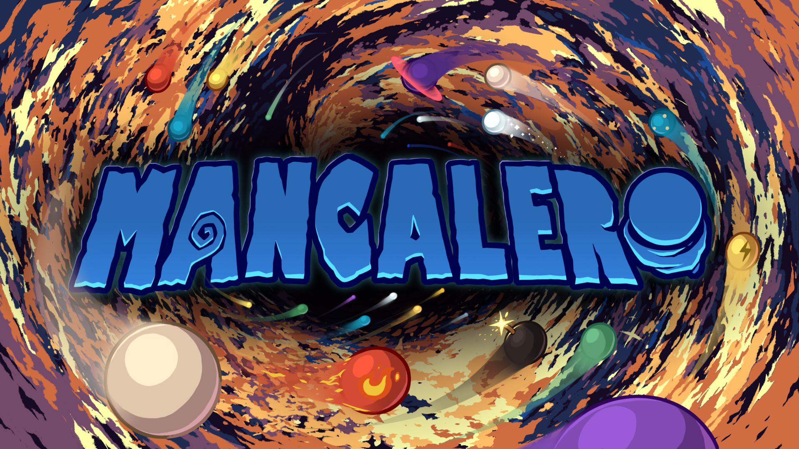
DeveloperArchiusDev
FormatSolo indie game
PlatformWindows · macOS · Linux
GenreRoguelike deckbuilder
01 / PLAY THE DEMO
Play the current Mancalero demo.
The free demo is live on Steam and itch.io. It covers Mancalero’s first three tables, with special marbles, Blessings, bosses, and Endless Mode. The full game launches November 4, 2026 on Steam.
PUBLIC ITCH DEMO · Opens the current playable build and download options.
01 / COPY
Universal pitches
Ready-to-use copy for forms, press pages, creator outreach, and showcase submissions.
Build a pouch of special marbles, sow explosive combos, and face bosses that rewrite Mancala in this tactile roguelike deckbuilder.
Mancalero reimagines Mancala as a roguelike deckbuilder. Collect rule-breaking marbles, discover powerful synergies, master changing boards, and survive bosses that twist the rules of play. Every run asks you to read the board, shape your pouch, and turn one clever move into a ridiculous score.
Mancalero is a roguelike deckbuilder inspired by Mancala. Build a pouch filled with special marbles, then sow them through colourful boards to trigger extra turns, damage chains, score multipliers, and unexpected synergies. Between encounters, choose new marbles, blessings, pouches, and upgrades that shape the next run. The journey moves through evolving tables and bosses that change how Mancala works, asking you to adapt instead of repeating one solved strategy. With a tactile paper-pixel presentation and an original soundtrack, Mancalero is designed for players who enjoy readable strategy, satisfying combo escalation, and the surprise of a familiar game becoming something new.
Mancalero takes one of the world's oldest strategy games and turns it into a modern roguelike deckbuilder. Each run begins with a pouch of marbles and a board full of possibilities. Sow them through Mancala pits, read the resulting board state, and build toward chain reactions that can create extra turns, damage, score multipliers, and entirely new lines of play.
Special marbles give every run a different shape. Blessings and upgrades let you push a strategy further, while changing boards and rule-bending bosses force you to rethink the habits that carried you through the last table. The goal is not simply to play Mancala well. It is to understand how the rules, the pouch, and the opponent can be made to work together.
Mancalero combines tabletop tactility, paper-pixel presentation, strategic decision-making, and the escalating satisfaction of a build that starts sensible and ends gloriously unreasonable. It is being developed by ArchiusDev, a solo Ghanaian-Canadian indie developer.
02 / FACT SHEET
At a glance
Use this block as the source of truth for submissions and media coverage.
- Title
- Mancalero
- Developer
- ArchiusDev
- Developer type
- Solo indie developer
- Identity
- Ghanaian-Canadian developer
- Genre
- Roguelike deckbuilder / strategy / board game
- Platform
- Windows · macOS · Linux via Steam
- Playtest
- Completed Aug 7–16, 2026 · no key required
- Public demo
- September 15, 2026
- Full release
- November 4, 2026
- Price
- $12.99 USD · 10% launch sale planned
- Soundtrack
- Standalone OST + Marbles and Music bundle
- Store page
- Steam wishlist ↗
03 / THE GAME
What makes it Mancalero
The three promises to keep consistent across every channel.
01
Rule-breaking marbles
Build a pouch of special marbles and find the synergies that turn ordinary sowing into a combo engine.
02
Boards that keep moving
Each table brings a new strategic question, with changing layouts and mechanics that reshape how a run unfolds.
03
Bosses with opinions
Survive encounters that rewrite the rules of Mancala instead of simply adding more health to the opponent.
"A tactile storm of colourful, rule-breaking marbles ricocheting through carved Mancala boards as scores and combos erupt."
Visual hook04 / MEDIA
Media assets
The launch trailer, the newest social clips, gameplay loops, launch screenshots, key art, and the complete Steam capsule suite, including OUT NOW variants, for coverage and creator use.
Official launch trailer · out November 4, 2026 on Steam
1:25 · 1080p · 60 fpsMancalero Launch Trailer
The full game’s trailer: special marbles, four boards, the bosses that rewrite the rules, and one sow that breaks the game. Filmed in-game on the launch build.


Newest first · vertical 9:16 · YouTube Shorts / Reels / TikTok
12 clips · 1080 × 1920Social clips
The short-form series as posted on ArchiusDev’s channels: “My indie game has a problem” and “My indie game has a cool feature”, each built around one marble or system and filmed in-game. Free to embed or re-share with credit.
16:9 gameplay · compendium card, Bazaar purchase, then the sow
5 clips · 1920 × 1080Marble showcase clips
One marble per clip, from its compendium card to the purchase to a sow that shows what it does. Good B-roll for articles and videos.
Short loops from the Steam page
8 loops · MP4 + GIFGameplay loops and GIFs
The eight animations from the Steam store page, in story order. Each is available as an MP4 and as a full-colour GIF for embedding.


Launch build · 1920 × 1080 PNG · story order
10 PNGsScreenshots
The current Steam store set, captured on the launch build. Each opens or downloads at full size.
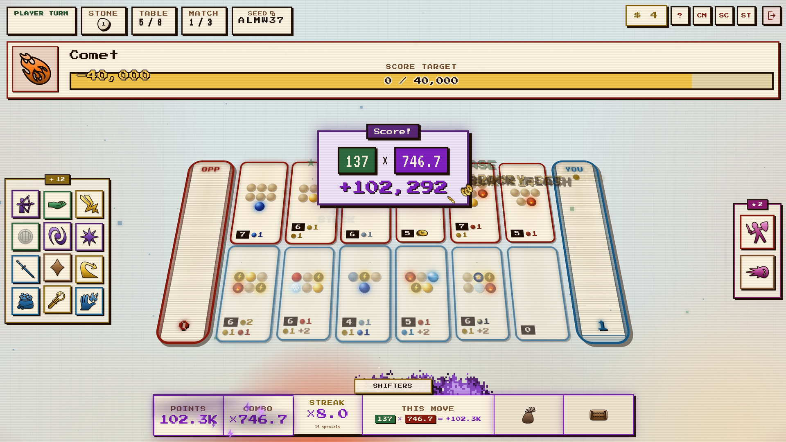
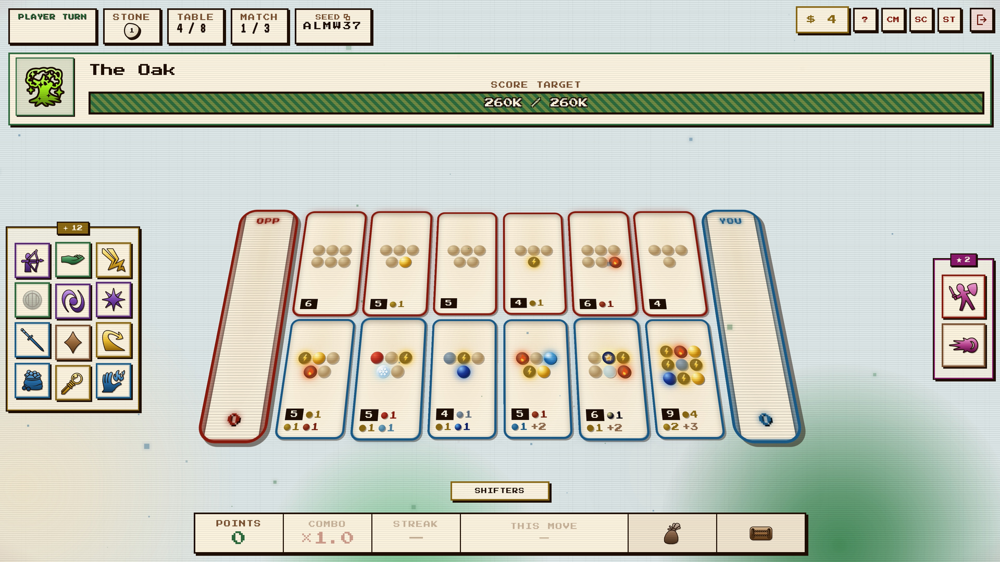
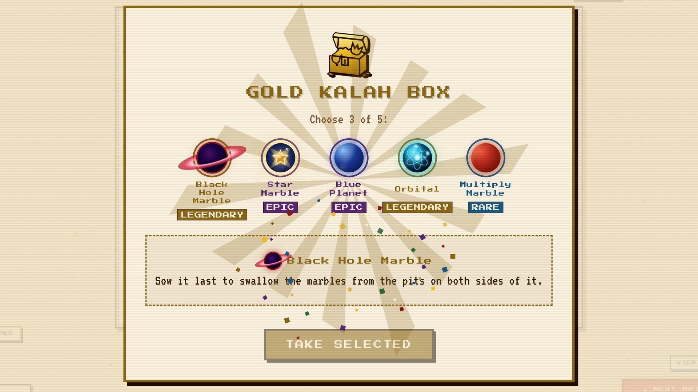
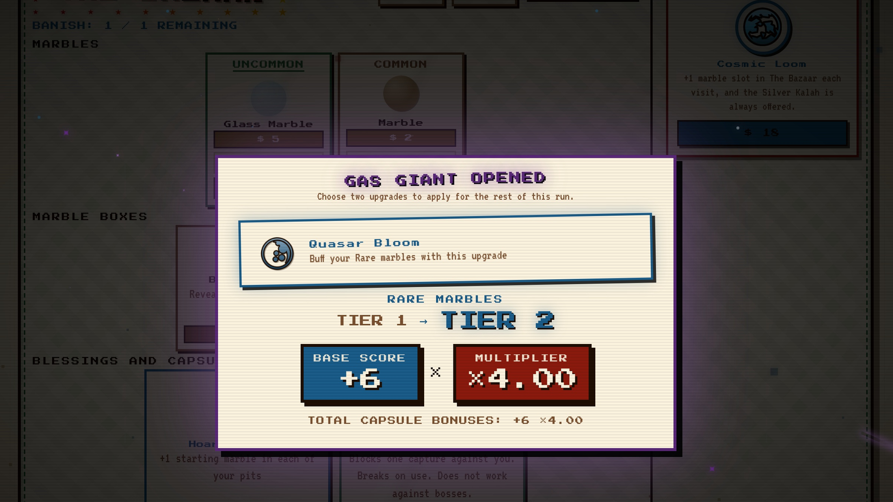
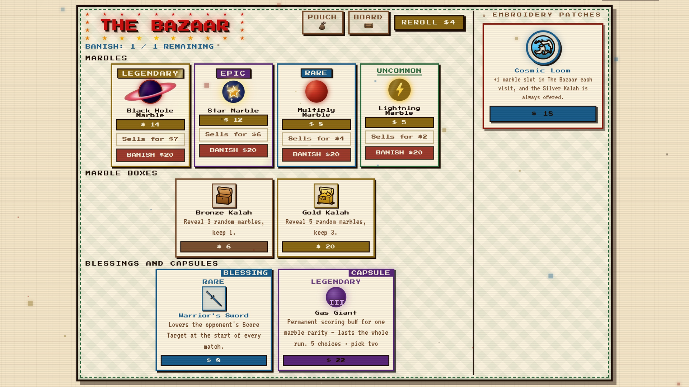
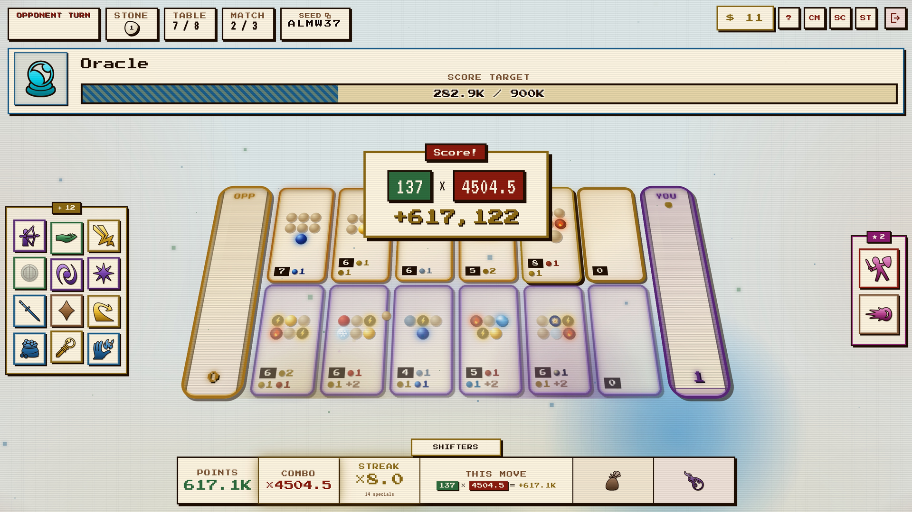
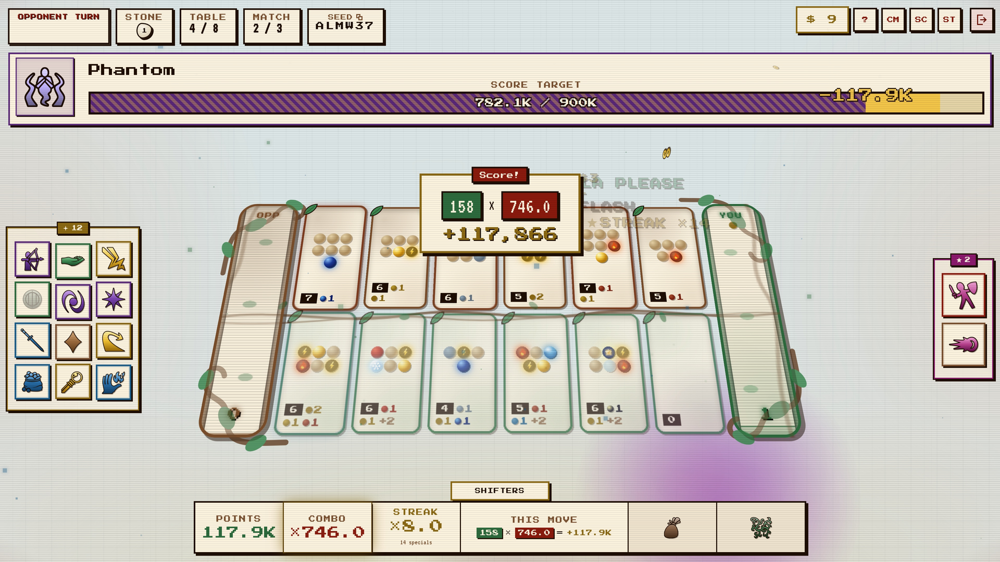
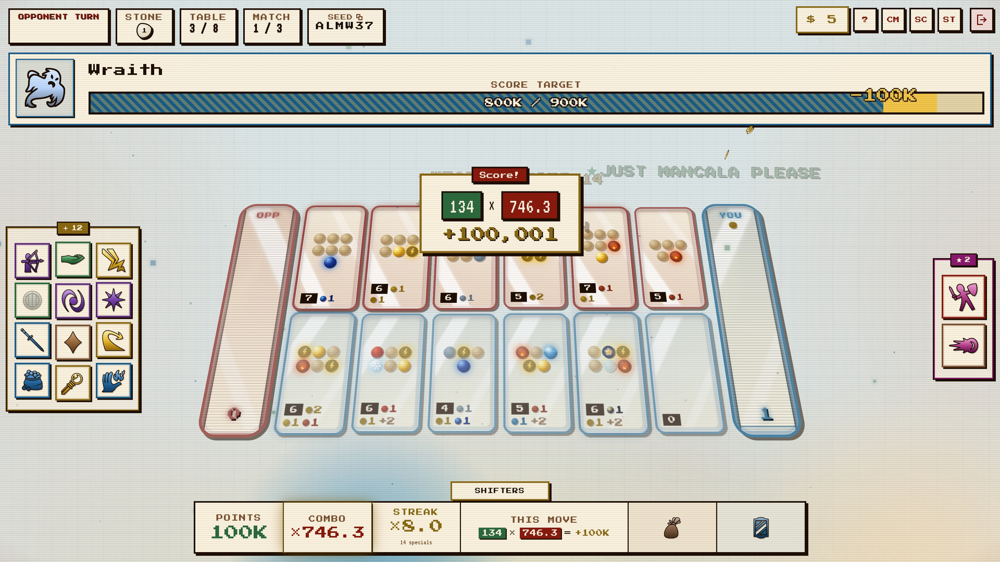
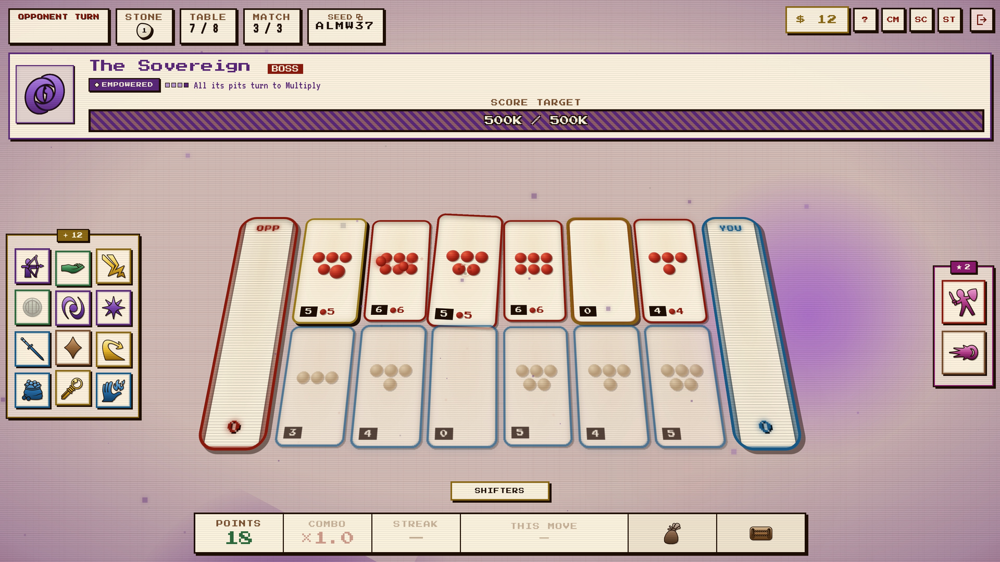
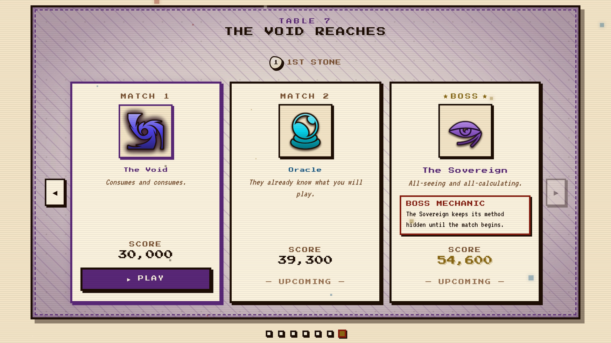
Scroll horizontally to browse · click any screenshot to open or download the full-size PNG ↓
Steam-ready branding
8 PNGs · 8 sizesComplete capsule suite
Native-size PNG exports for the Steam store surfaces, plus the official 1920 × 1080 key art without an added border outline. Every preview preserves the full frame instead of cropping it; click a card to open or download the original.
Primary artwork: the 1920 × 1080 key art above is the official no-border-outline artwork. The standard 920 × 430 header capsule is the only header treatment included.
Launch artwork
10 PNGs · 5 sizesOUT NOW capsule art
The Steam capsules with an OUT NOW ribbon, in red and in purple, for launch coverage, social posts and event pages.


ORIGINAL SOUNDTRACKListen on YouTube while you work.
Reference set
23 PNGsMarble gallery
Selected marble designs from Mancalero’s broader development. The free demo includes a subset of this collection.
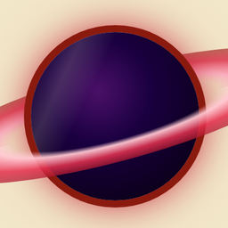
Blackhole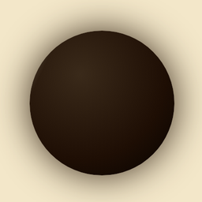
Black Reversi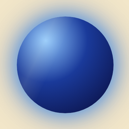
Blue Planet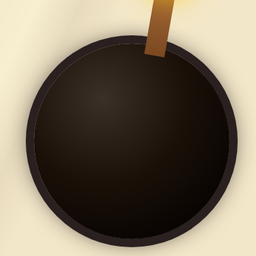
Bomb Bone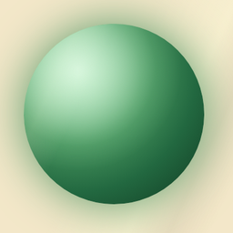
Boomerang Dice Fire Flood Glass Gold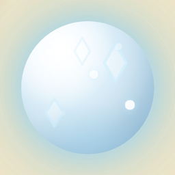
Ice Lightning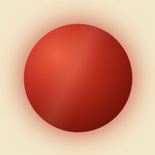
Multiply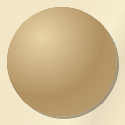
Normal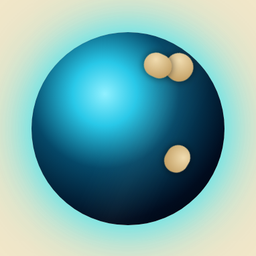
Orbital Poison Reversi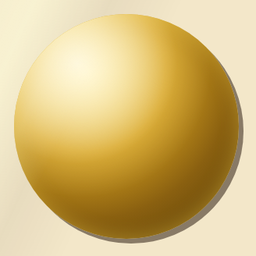
Skip Star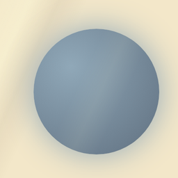
Steel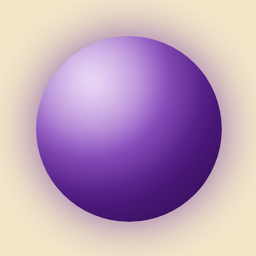
Thief White ReversiBlackhole1 / 23
Use the arrows to browse · click the marble to open or download the full PNG.
05 / SUBMISSION PACKAGE
INDIE Live Expo, ready to download.
A public mirror of the exact media set prepared for INDIE Live Expo 2026.12.1. Use the matching download for each form field without needing Drive access.
INDIE LIVE EXPO 2026.12.1Submitted · awaiting selection
Open official entry ↗Applied September 3, 2026 · event December 1, 2026 JST · public media mirror supplied.
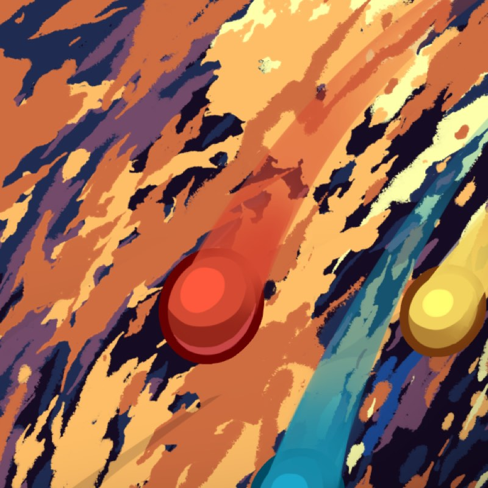
Preview screenshot · 1:1
Download ↧Square profile image
800 × 800 · JPG · 121 KB · no text/UI/logo overlay

For the form
Use the current store reference above.
The square profile image remains available here for Preview Screenshot. For high-resolution gameplay stills, use the current Steam screenshot gallery in the Media section.
Specs checked
- The square image is 1:1 and under 250 KB.
- The Steam gallery uses the live store screenshot set.
- All visible media here is static for reliable press-kit browsing.
06 / FOR CREATORS
Keys, streams, and coverage
Everything needed to decide whether Mancalero is a fit for your audience.
Preview access
Mancalero launches November 4, 2026 on Steam, and the free demo is live now. Creators and press can request a full-game key for coverage or previews. Include your channel or outlet, audience, and preferred coverage window.
Request coverage access ↗Streaming policy
Streaming, recording, and monetized videos are welcome for the demo and the full game. Please credit Mancalero and link the Steam page, Discord, or this media hub. Please do not redistribute private keys or game files.
Steam page ↗Good audience fit
Strategy, roguelike, deckbuilder, board-game, indie discovery, and creators who enjoy explaining the decisions behind a run.
Download press kit ↗07 / BRANDING
Words to use
Keep the public description vivid, specific, and easy to repeat.
Preferred description
"A roguelike deckbuilder inspired by Mancala."
"Build a pouch of rule-breaking marbles and sow explosive combos across colourful Mancala battles."
Emphasize
- Special marbles and synergies
- Evolving boards
- Bosses that change the rules
- Tactile paper-pixel presentation
- Original soundtrack
Avoid reducing it to
- "Just a Mancala clone"
- A generic card game
- Only a score-attack game
- A demo-only project: the full game launches November 4, 2026
08 / DOWNLOADS
Press kit and downloads
The current press set in two downloads. Every file is also linked on its own in the Media section above.
Press kit ZIPLogos, launch screenshots, launch trailer, key art, the Steam capsule suite with OUT NOW variants, and the fact sheet↓Gameplay B-roll ZIPThe launch trailer, the five marble showcase clips, and the eight gameplay loops as MP4↓Universal submission copyPitches, bios, FAQs, and reusable application answers↗
09 / CHANGELOG
Project notes
Small, useful updates for people following the project.
Public Playtest complete
The no-key Steam Playtest ran August 7–16, 2026. Feedback is now being carried into the live public demo.
Public demo live
The free demo went live on Steam and itch.io.
v1.02 demo update and Steam Next Fest
The v1.02 demo update brought new scoring effects, pits that hold any number of marbles, the full DX soundtrack, and a long list of fixes, and Mancalero took part in Steam Next Fest (October 19–26).
Launch trailer
The official launch trailer and a run of new social clips, all collected in the Media section above.
Full release on Steam
Mancalero launches on Steam for Windows, macOS, and Linux.
10 / CONTACT
Follow the next marble
ArchiusDev is building Mancalero in public and welcomes thoughtful coverage, showcase conversations, and creator connections.
Public identityArchiusDevSolo indie developer · maker of Mancalero